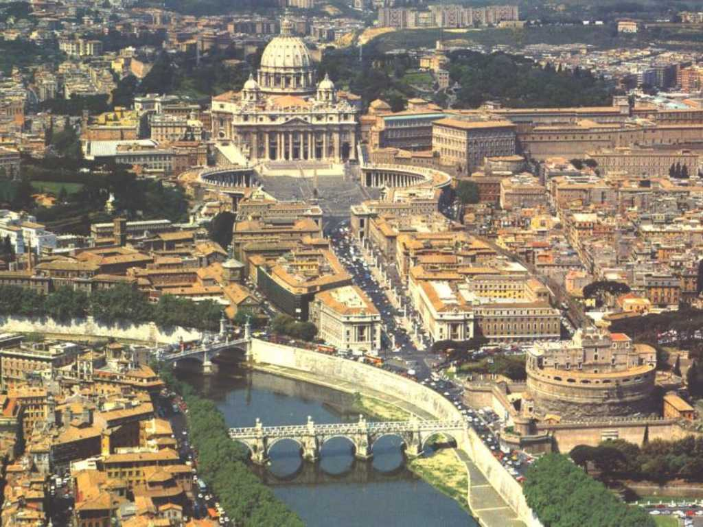
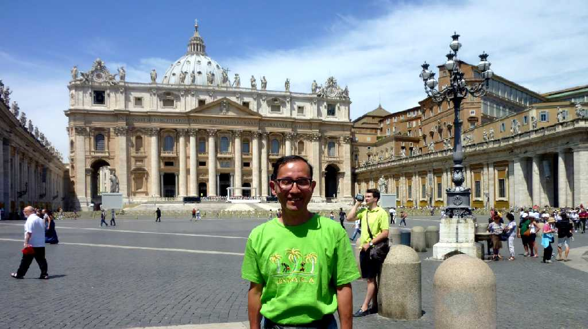

August 1973 Vatican City
ヴァチカン市国は０.44㎡の世界最小国 サンピエトロ寺院はキリストの弟子ペテロを祭ったキリスト教カトリックの総本山 ２千年に渡り教皇を引継ぎ９億人の信者をかかえ広場には４０万人収容できるミケランジェロが設計した高さ１３２.5ｍの世界最大の教会

June 24 2011 Basilica di San Pietro Vatican
イタリア４,５００ｋｍバスの旅で約４０年ぶりのバチカン再訪問
Vatican